騒音の記録を、管理会社に出せる報告書へ。
録音・dB・日時・メモをまとめて、PDFレポートを自動作成。音声ファイルも添付して、そのまま相談メールに使えます。

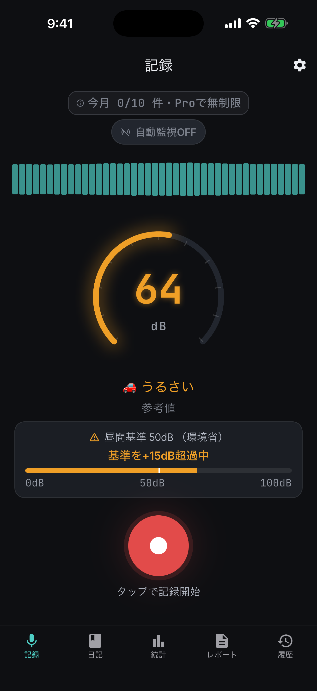
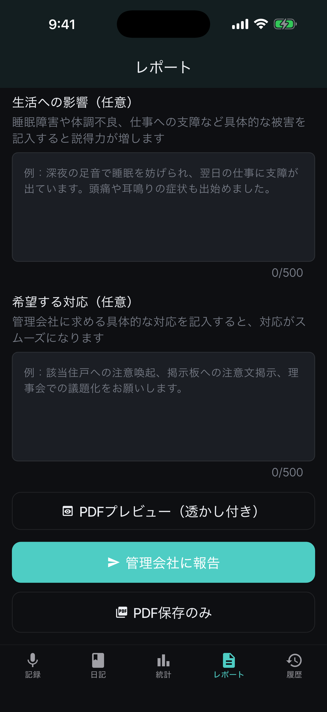
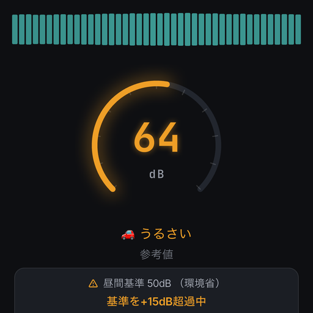
管理会社に相談したいのに、うまく伝えられない。
騒音トラブルは、つらさを感じていても、いざ説明しようとすると曖昧になりがちです。何時に、どんな音が、どのくらい続いたのか。SoundLogは、その説明を記録で支えます。
日時を思い出せない
深夜や早朝の騒音は、後から正確に説明しづらいものです。
口頭だけでは弱い
“うるさいです”だけでは、頻度や深刻さが伝わりにくくなります。
報告文が面倒
メモ、録音、添付、文面作成を別々に行うと続きません。
実際の画面で、記録から報告まで迷わない。
実際のアプリ画面で、記録から報告までの流れを確認できます。
記録
dB・環境基準・録音を一画面で確認できます。
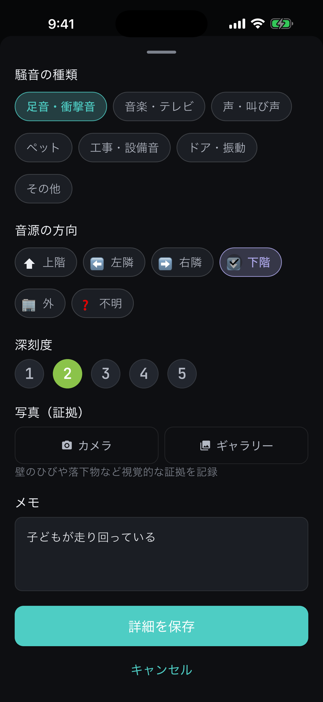
詳細保存
種類、方向、深刻度、写真、メモを追加できます。
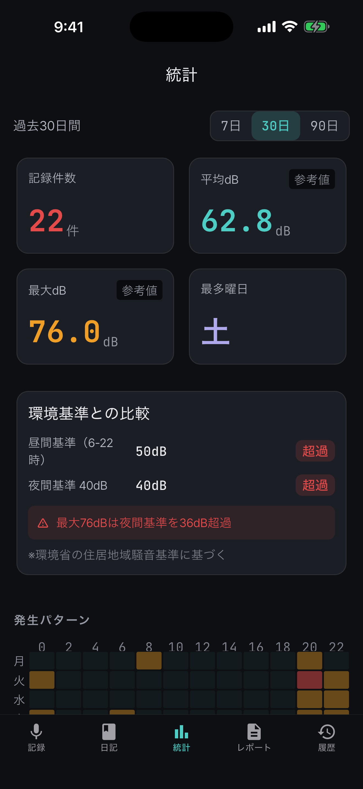
統計
件数、平均dB、最大dB、最多曜日を確認できます。
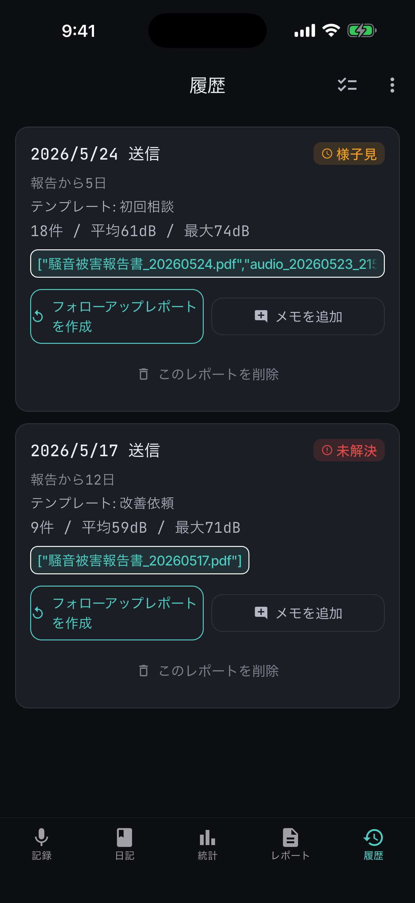
履歴
送信済みレポートと添付音声を後から見返せます。
相談文を考える手間も、
添付ファイルを探す手間も減らせます。
記録をためるだけではなく、ユーザー自身が確認して共有できるPDFと音声ファイルにまとめ、送信前の確認まで支援します。
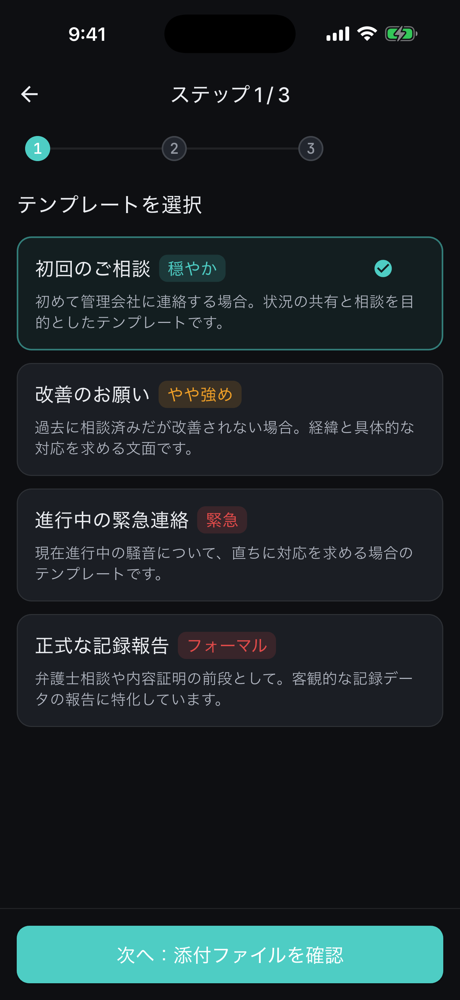
1. テンプレートを選ぶ
初回相談、エスカレーション、正式苦情、緊急報告から状況に合う文面を選べます。
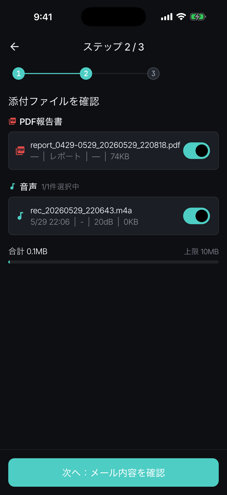
2. 添付ファイルを確認
PDFと音声ファイルを一覧で確認。必要なものだけ添付して送れます。
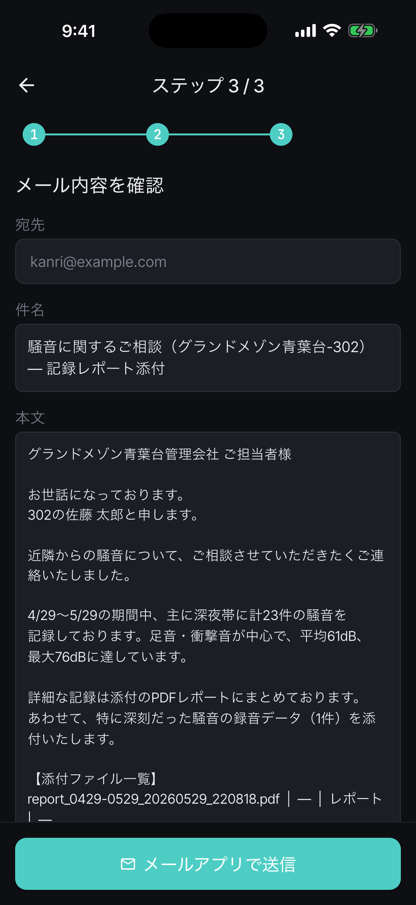
3. メール内容を確認
対象期間、件数、平均dB、最大dBを反映した本文を確認できます。
管理会社が確認しやすい形に、自動で整理。
報告対象期間、記録件数、平均dB・最大dB、騒音種別、発生源方向、曜日・時間帯の傾向、添付音声の対応表まで。相談に必要な情報をまとめます。
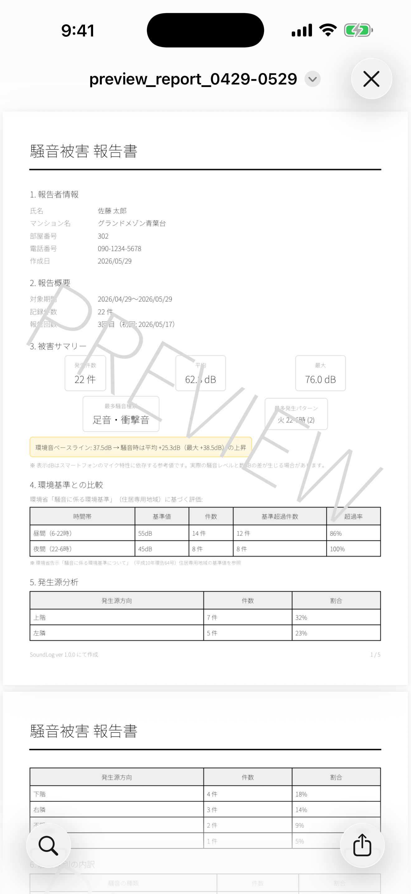
PDFと音声をまとめて、管理会社へ。
件名・本文をテンプレートから生成し、PDF報告書と音声ファイルを添付。送信前に内容を確認できるため、落ち着いて相談できます。
記録がたまるほど、状況が見える。
曜日・時間帯の傾向や最大dBを見える化。口頭だけでは伝わりにくい騒音の発生パターンを整理できます。
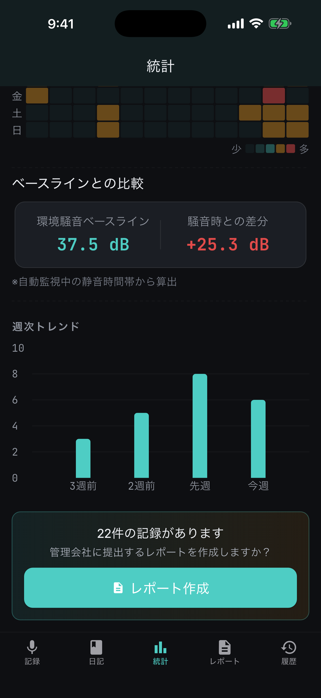
気づけなかった騒音も、残しやすく。
自動監視モードでは、設定したdBを超えたときに短時間の録音を保存できます。手動で録音ボタンを押せない場面を補助します。
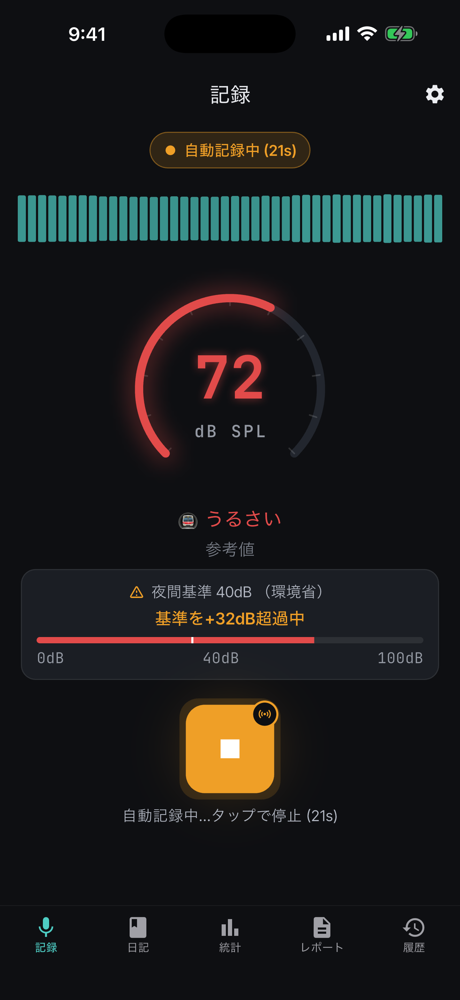
記録、整理、報告。必要な機能をひとつに。
ワンタップ録音
騒音が起きた瞬間に、dB・日時・音声をすぐ記録。
騒音日記
日付ごとの記録を一覧化。音声再生やメモ確認もできます。
統計・傾向分析
平均dB、最大dB、曜日・時間帯の傾向を見える化します。
自動録音モード
設定したdBを超えたときに自動で録音します。
PDF報告書
記録一覧・統計・添付音声の対応表をPDFにまとめます。
管理会社へ送信
ユーザー自身のメール作成画面で、PDFと音声ファイルを添付して送信できます。
口頭の相談から、記録に基づく相談へ。
うまく説明できない
管理会社に電話しても「いつですか？」「どんな音ですか？」と聞かれ、記憶だけでは具体的に伝えづらい。
PDFと音声で伝えられる
日時・dB・音声・メモを記録し、PDFに整理。音声ファイルも添付して、状況を具体的に共有できます。
まずは無料で記録。必要になったら、報告まで。
無料は「まず記録する」価値。チケットとProは「管理会社へ伝える」価値。1回だけ報告したい方にも、継続的に使いたい方にも対応します。
レポートチケット
1回だけ管理会社へ報告したい方へ。
- 月20件まで記録
- PDF保存
- メール送信
- 音声ファイル添付
- 報告書1回 / 3回パック
Pro月額
継続的に記録・分析・報告したい方へ。
- 記録無制限
- 詳細分析
- PDFレポート無制限
- 自動録音モード
- 相談履歴メモ
大切な記録だから、安心して使える設計に。
データの扱いと、スマートフォン計測の限界を明確にしながら、相談材料として使いやすい形に整えます。
端末内に保存
録音データや記録は端末内に保存されます。PDFや音声の共有はユーザー操作で行います。
送信前に確認
メール本文、PDF、添付音声を確認してから送れます。
簡易計測として明記
専門測定器とは異なるため、参考記録として使う設計です。
日本語で使える
記録、レポート、メール文面を日本語で整理できます。
よくある質問
法的証拠として使えますか？
スマートフォンのマイクによる簡易計測のため、法的な効力は保証していません。管理会社への相談・状況共有のための参考記録としてご活用ください。
無料でも使えますか？
はい。無料でも月10件まで騒音を記録できます。PDFの保存や管理会社への送信には、レポートチケットまたはProが必要です。
音声ファイルも送れますか？
はい。PDF報告書とあわせて、録音した音声ファイルを添付できます。送信前に添付内容を確認できます。
録音データはクラウドに保存されますか？
いいえ。録音データや記録は端末内に保存されます。必要に応じて、ユーザー自身がPDFや音声を共有します。
今日の騒音を、まずは記録に残してみませんか？
あとから説明しようとすると、記憶は曖昧になります。SoundLogなら、その場の記録を、管理会社に伝えやすい形へ整理できます。